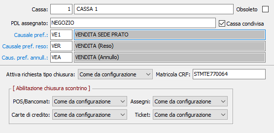

Casse
La tabella consente di codificare le varie casse su cui opereranno gli addetti alla vendita. Ad ogni cassa può essere associato uno specifico posto di lavoro ed una causale preferenziale.

CODICE: codice numerico della cassa. Sul campo sono attive le funzioni di ricerca (F9).
DESCRIZIONE: campo alfanumerico descrivere la cassa.
PDL ASSEGNATO: indicare il nome del posto di lavoro a cui la cassa è collegata; se specificato gli operatori che utilizzeranno il posto di lavoro potranno movimentare solo le casse assegnato a quel posto di lavoro. Il campo non è obbligatorio.
CASSA CONDIVISA: se la casella è spuntata la cassa sarà utilizzabile da tutti i PDL che non abbiano una propria cassa assegnata (campo "PDL assegnato" associato al proprio PDL). Al momento in cui si accede alla movimentazione e viene mostrata la selezione Addetti/Casse saranno mostrate le casse condivise a condizione che il PDL su cui si opera non abbia casse associate al proprio nome.
CAUSALE PREFERENZIALE: indica il codice causale, relativo ai movimenti di vendita, che sarà proposto in automatico a chi utilizzerà la cassa. Sul campo sono attive le funzioni di ricerca (F9) e manutenzione (CTRL+W) relative alla tabella casuali vendita.
CAUSALE PREFERENZIALE RESO: indica il codice causale preferenziale, relativo ai movimenti di reso. Sul campo sono attive le funzioni di ricerca (F9) e manutenzione (CTRL+W) relative alla tabella casuali vendita.
CAUSALE PREFERENZIALE ANNULLAMENTO: indica il codice causale preferenziale, relativo ai movimenti di annullamento. Sul campo sono attive le funzioni di ricerca (F9) e manutenzione (CTRL+W) relative alla tabella casuali vendita.
Se presenti tutte e tre le causali preferenziali saranno utilizzate come filtro nello zoom del campo causale in fase di inserimento del movimento di vendita per chi utilizza la cassa.
ATTIVA RICHIESTA TIPO CHIUSURA: il parametro definisce il comportamento per la singola cassa a livello di chiusura del movimento; se impostato come da configurazione, viene utilizzata l'impostazione generale inserita nella configurazione, altrimenti può essere attiva, richiede il tipo di chiusura del movimento (contanti, assegni, ecc) oppure disattiva, accetta solo contanti senza calcolo del resto.
MATRICOLA CRF: può essere impostato con il valore della matricola RT del CRF a cui è associata la cassa.
ABILITAZIONE CHIUSURA SCONTRINO: il parametro definisce quali tipi di chiusura scontrino accettare sulla singola cassa; per ogni tipologia di chiusura se impostata come da configurazione, viene utilizzata l'impostazione generale inserita nella configurazione, altrimenti può essere attiva, utilizza il tipo di chiusura sul movimento, oppure disattiva, non lo utilizza.
OBSOLETO: flag attivabile dall’utente per inibire ulteriori utilizzi dell’elemento di tabella in esame.